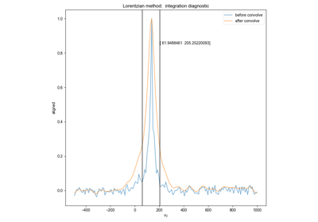
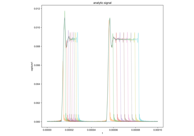
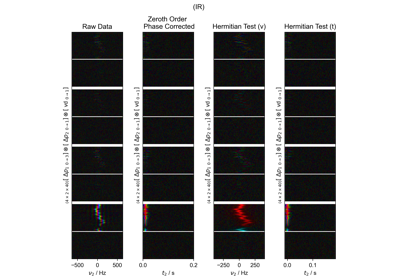

ProcScripts Example Gallery¶
Below is a gallery of examples using our various functions.



Demonstrate Integrate Limits on Experimental Data
Demonstrate Integrate Limits on Experimental Data
Phasing and Timing Correction Using a Varied Tau Experiment
Phasing and Timing Correction Using a Varied Tau Experiment

Phasing and Timing Correction with Real Data
Phasing and Timing Correction with Real Data


Captured Nutation

Phasing and Timing Correction With Fake Data
Phasing and Timing Correction With Fake Data


sphx_glr_auto_examples_time_domain_noise.py
Here, we want to calculate the time-domain variance to use in error propagation.
Check NMR/ESR resonance ratio using a field sweep
Check NMR/ESR resonance ratio using a field sweep
Check Integration